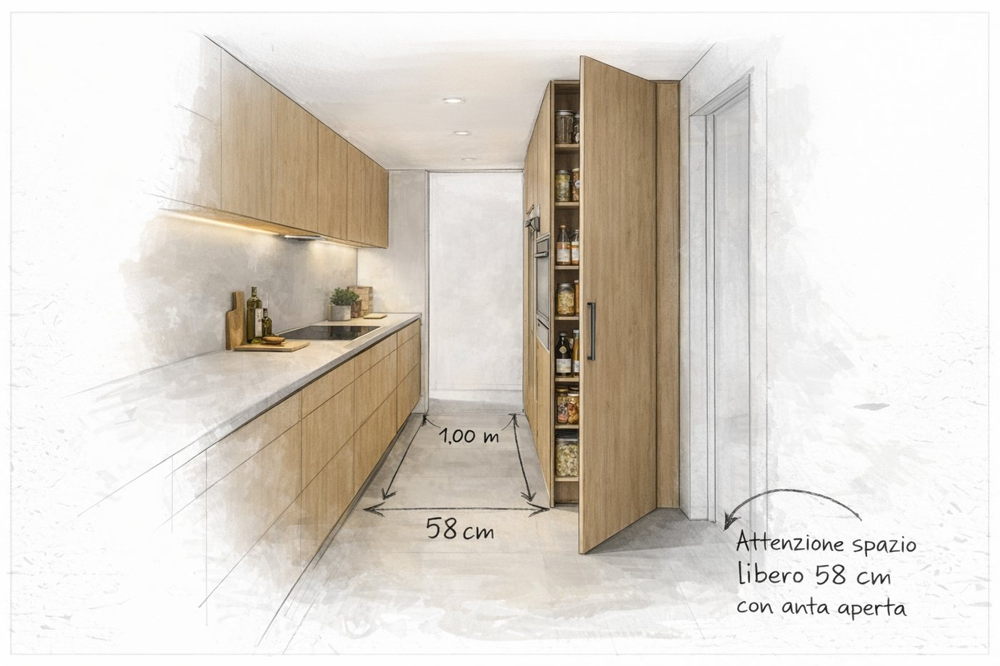
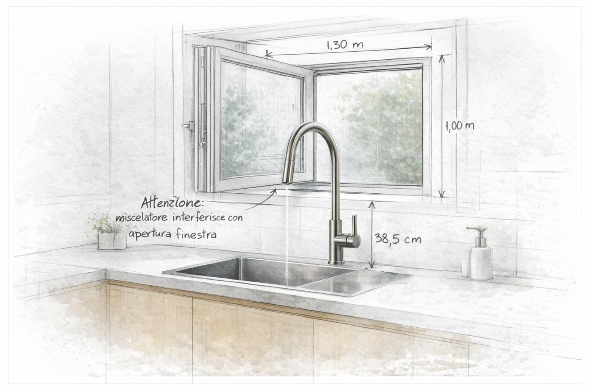
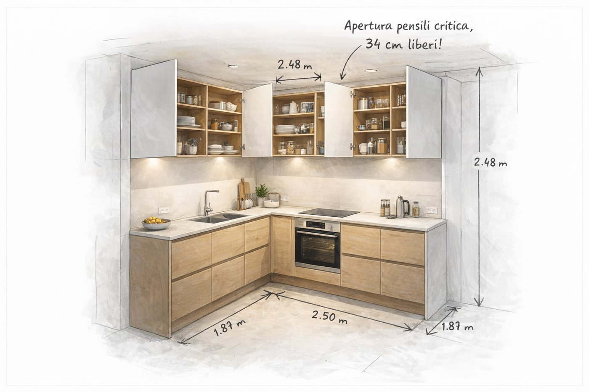
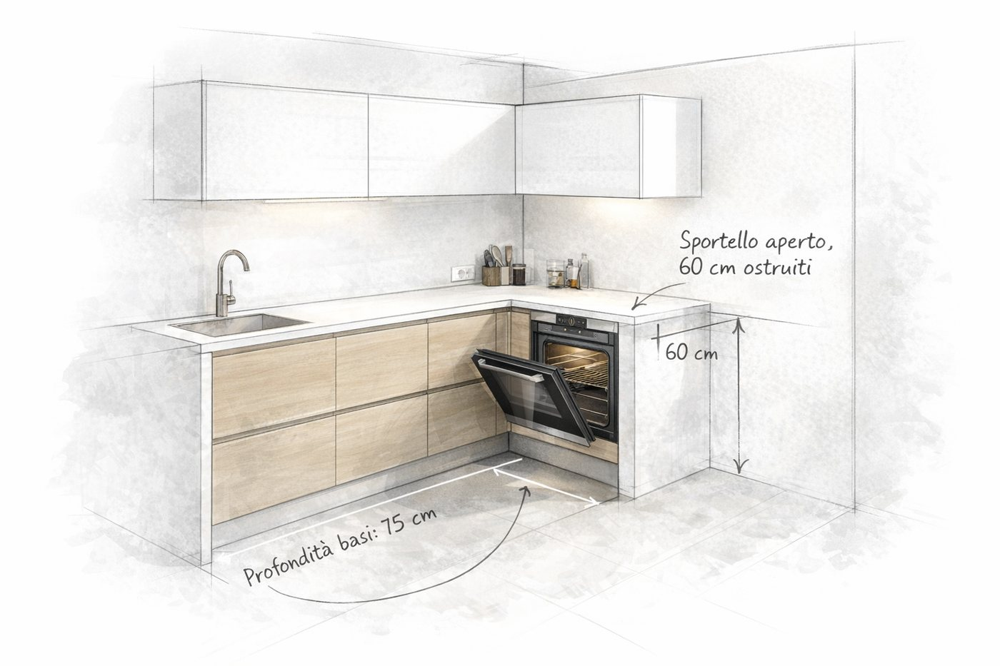

Caso reale
Il problema parte da una situazione esistente
La cucina viene letta a partire da misure, immagini, progetto, preventivo o dubbio effettivamente presentato, non da uno scenario ideale costruito a posteriori.
Problemi reali, pubblicati in forma anonima
Situazioni reali che mostrano come misure, aperture, elettrodomestici, preventivi e uso quotidiano possano cambiare la lettura di una cucina. Se riconosci un problema simile nel tuo caso, puoi sottoporlo gratuitamente prima di scegliere un servizio.
La prima valutazione serve a capire se e come approfondire. Non avvia automaticamente un servizio a pagamento.

Perché questi casi contano
Caso reale
La cucina viene letta a partire da misure, immagini, progetto, preventivo o dubbio effettivamente presentato, non da uno scenario ideale costruito a posteriori.
Criterio
Passaggi, aperture, ingombri, contenimento, elettrodomestici e confronto tra proposte vengono messi in relazione con il modo in cui la cucina dovrà funzionare.
Decisione
L'obiettivo non è sostituire il rivenditore, ma rendere chiaro che cosa conviene mantenere, verificare o discutere prima che la scelta diventi definitiva.
Una precisazione importante
I contenuti sono pubblicati in forma anonima e servono a rendere comprensibili i criteri di lettura. Non vengono utilizzati per mettere in discussione rivenditori o professionisti coinvolti nei singoli progetti.
Archivio specializzato
Situazioni diverse, con un principio comune: individuare prima il punto che merita davvero attenzione.

La porta aperta riduce lo spazio realmente utilizzabile.
Leggi il caso →
Le distanze vanno lette durante l'uso, non solo a elementi chiusi.
Leggi il caso →
Rubinetto, anta e serramento devono poter convivere realmente.
Leggi il caso →
Più contenimento non significa automaticamente più funzionalità.
Leggi il caso →
Una variazione di profondità modifica accessibilità, raccordi e spazio utile.
Leggi il caso →
Il totale non spiega da solo materiali, lavorazioni ed esclusioni.
Leggi il caso →Hai riconosciuto il tuo problema?
Descrivi gratuitamente la situazione e allega il materiale che hai. Sistema 90G valuta pertinenza e tipo di bisogno; solo se serve un approfondimento viene indicato il servizio professionale con il relativo prezzo.
Prima valutazione · gratuita
L'invio iniziale non attiva alcun acquisto. Se il caso richiede un lavoro professionale, percorso, contenuti e prezzo vengono indicati prima di iniziare.